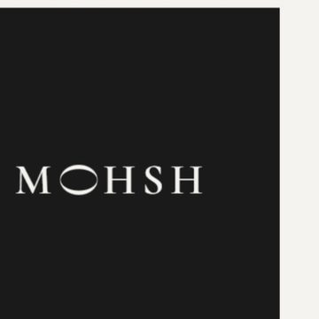
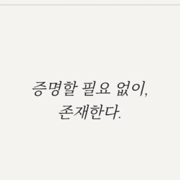
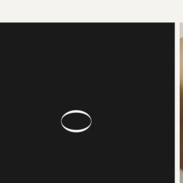
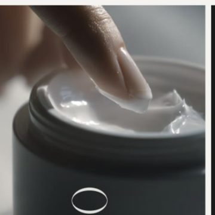
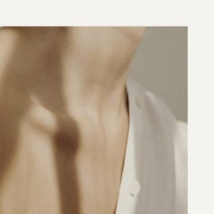

반나절 만에 만든 가상의 브랜드 MOHSH — Generative AI로 정기적인 브랜드 인스타그램 피드 생성이 되는 파이프라인 구축을 실험한 과제입니다.
제품은 핵심이 아니예요. 브랜드 콘텐츠를 어디까지 자동화할 수 있는지 보고 싶었습니다. AI가 촬영 없이도 매주 브랜드에 맞는 게시물을 계속 만들어낼 수 있을까? 확인을 위해 AI로 스토리, 페르소나, 팔레트, 톤까지 갖춘 가상 브랜드를 통째로 만들고, 이걸 이미지 생성용 프롬프트 스펙으로 다뤄보았습니다.
제약이 아트디렉션을 대신한다 — 스펙이 충분히 촘촘하면, 사람이 개입하지 않아도 이미지 모델이 계속 브랜드를 유지한다.
아래 여섯 개의 고정 규칙이 실제 생성 스펙입니다. 여기에 묶어두면 피드가 스스로 생성돼요 — 제약이 브랜드를 지탱합니다.
전체가 하나의 루프로 돕니다. 고정 스펙에 주간 브리프를 더해 프롬프트를 만들고, 모델이 이미지를 렌더링하고, 제약 검수를 통과하면 게시됩니다 — 그 경로 어디에도 촬영은 없습니다.
생성된 이미지를 실제 인스타그램 프로필에 얹은 모습입니다. 무드 사진과 솔리드 브랜드 타일이 번갈아 그리드에 리듬을 만들고, 트립틱은 세 칸에 걸쳐 하나의 장면으로 읽힙니다. 얼굴은 빠지고 팔레트는 유지된 채 — 촬영 없이 피드 하나가 완성됩니다.





런칭 전 5단계 롤아웃. 각 단계는 같은 고정 스펙에 대한 서로 다른 생성 브리프입니다.